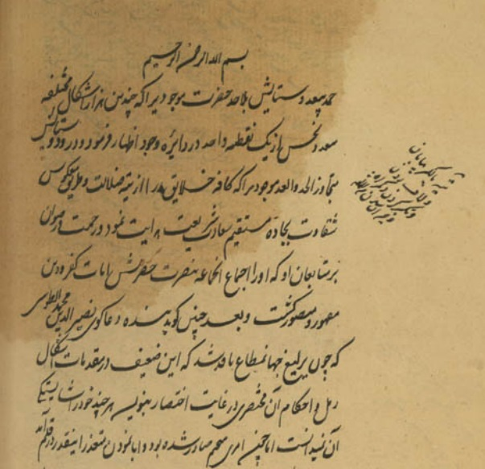

🏠 بازگشت به صفحه اصلی

رساله معرفت الرمل
📩 دریافت فایل🗒 تعداد نسخه : ۸
➕ 1 نسخه خطی
➕ 2 نسخه خطی
➕ 3 نسخه خطی
➕ 4 نسخه خطی
➕ 5 نسخه خطی
➕ 6 نسخه خطی
➕ 7 نسخه خطی
➕ 8 نسخه خطی
بسم الله الرحمن الرحیم
حمد بیعدد و سپاس بلا عدد حضرت موجودیرا که چندین هزار اشکال مختلفه سعد و نحس از یک نقطه واحد در دایره وجود اظهار فرمود و درود
و بعد چنین گوید بنده دعاگوی نصیرالدین محمدالطوسی
اطلاعاتی ثبت نشده است.
اطلاعاتی ثبت نشده است.
اطلاعاتی ثبت نشده است.
📩 دریافت فایل کتاب
جهت دریافت یا سفارش این کتاب از طریق تلگرام پیام دهید.
📩 درخواست کتاب در تلگرام